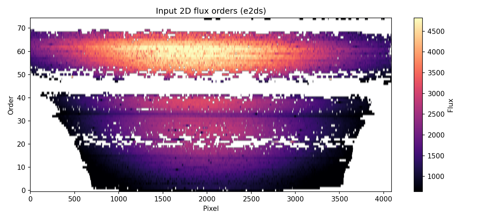
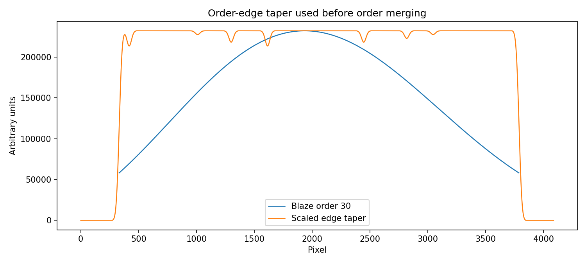
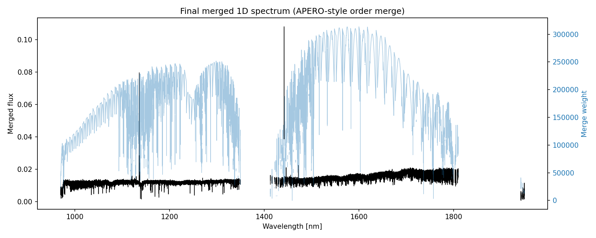
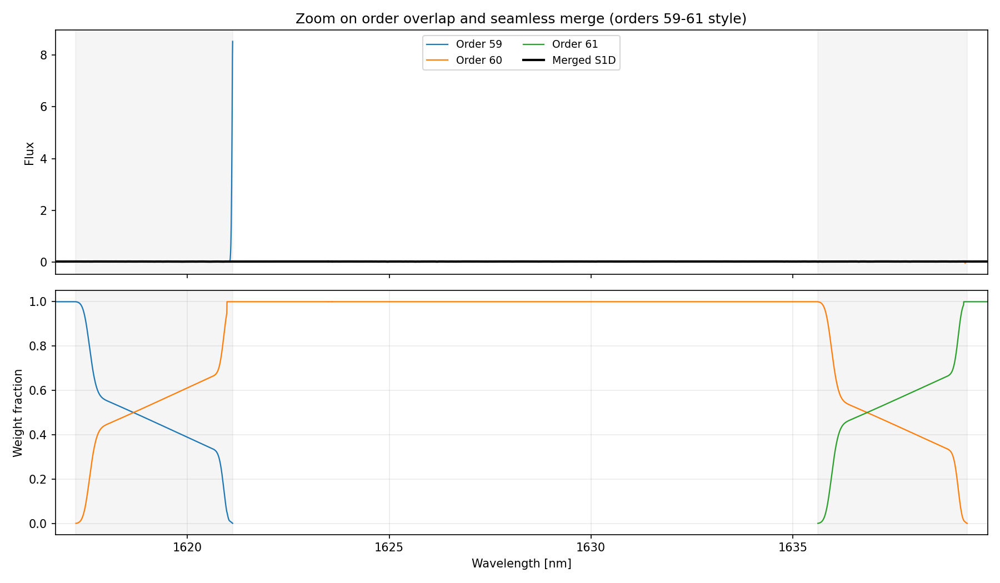

S1D-Rama
APERO-style conversion from 2D extracted echelle orders (s2d / e2ds FITS) to a merged 1D spectrum (s1d FITS table).
Why this exists
Many analyses need a single 1D spectrum, but reduced echelle products are naturally 2D (order × pixel). S1D-Rama provides a transparent, script-level implementation of the APERO order-merging logic used to build 1D spectra.
What this does
Input
An s2d FITS file (*t.fits) from which S1D-Rama extracts:
- 2D flux image per order
- 2D wavelength map per order
- 2D blaze function per order
Output
FITS binary table extension named S1D with the following columns:
| Column | Unit | Description |
|---|---|---|
wavelength | nm | Common observed-frame wavelength grid |
flux | — | Native flux at observed wavelength |
eflux | — | Flux uncertainty |
flux_zerovel | — | Flux shifted to stellar rest frame (BERV + vsys) |
eflux_zerovel | — | Flux uncertainty for zero-velocity flux |
weight | — | Merge weight from blaze function |
Algorithm
APERO-style order merging in seven steps:
- Build target 1D wavelength grid (uniform in velocity).
- Build edge taper weights per order so order ends fade in/out smoothly.
- Multiply flux and blaze by the edge taper.
- Spline each order onto the target 1D grid.
- Combine overlapping orders using the blaze as weight.
- Normalize by total weight in each wavelength bin.
- Write merged vectors to FITS.
Velocity correction
S1D-Rama automatically reads the barycentric Earth radial velocity (BERV) and target systemic velocity from the FITS header and computes a rest-frame flux on the common wavelength grid.
| Header keyword | Extension | Meaning |
|---|---|---|
BERV | ext 1 | Barycentric Earth radial velocity (km/s) |
ESO TEL TARG RADVEL | ext 0 | Target systemic velocity (km/s) |
flux_zerovel(λ) = flux(λ / doppler_factor).
Both the observed and rest-frame fluxes are written on the same wavelength grid, enabling
direct co-addition and template matching across epochs.
Quick start
1 · Clone and enter the repo
git clone https://github.com/eartigau/s1drama
cd s1dramaAlready have the repo?
git pull --ff-only2 · Install dependencies
Requires: numpy ≥ 1.26, scipy ≥ 1.11, astropy ≥ 6.0, matplotlib ≥ 3.8, PyYAML ≥ 6.0.
python3 -m venv .venv
source .venv/bin/activate
python -m pip install --upgrade pip
python -m pip install -r requirements.txtconda create -n s1drama python=3.12 -y
conda activate s1drama
python -m pip install --upgrade pip
python -m pip install -r requirements.txtpython -m pip install -r requirements.txt3 · Run on your FITS file
python mk1d.py --make-plots data/NIRPS.2023-08-29T01:33:35.188t.fitsProcess many files with a wildcard (quote to let Python expand it):
python mk1d.py "data/*.fits"Force reprocessing of already-existing outputs:
python mk1d.py --force "data/*.fits"Expected products
products/s1d/NIRPS.2023-08-29T01:33:35.188t_s1d_apero.fits
docs/figures/NIRPS.2023-08-29T01:33:35.188t_fig1_e2ds.png
docs/figures/NIRPS.2023-08-29T01:33:35.188t_fig2_edge_taper.png
docs/figures/NIRPS.2023-08-29T01:33:35.188t_fig3_s1d.png
docs/figures/NIRPS.2023-08-29T01:33:35.188t_fig4_overlap_zoom.png4 · Inspect output quickly
python - <<'PY'
from astropy.io import fits
p='products/s1d/NIRPS.2023-08-29T01:33:35.188t_s1d_apero.fits'
with fits.open(p) as h:
print('HDUS', len(h))
print('EXT1', h[1].name)
print('COLS', h[1].columns.names)
print('NROWS', len(h[1].data))
PYConfiguration
All tunables live in config/s1drama.yaml. This file controls:
- FITS extension names (flux / wave / blaze)
- Output directory and filename suffix
- Merge constants (wavelength limits, binning, blaze threshold, edge smoothing)
- Plot defaults
Supply an alternative config at runtime:
python mk1d.py --config config/s1drama.yaml data/your_file.fitsCLI reference
python mk1d.py --help| Flag | Description |
|---|---|
--make-plots | Generate documentation/debug figures |
--fig-dir | Choose where figures are written |
--output-dir | Override YAML output directory |
--force | Overwrite already-processed outputs |
--output | Custom single-file output path (single input only) |
--config | Path to alternative YAML config file |
Figures

Fig 1 — Input 2D flux image per echelle order

Fig 2 — Example order-edge taper for smooth blending at order boundaries

Fig 3 — Final merged 1D spectrum and merge weight as a function of wavelength

Fig 4 — Zoom on the overlap between orders 59–61. Color-coded order spectra are shown together with the merged S1D. The lower panel shows each order's weight fraction, making the transition at order boundaries explicit and demonstrating the seamless handoff in overlap regions.
Fidelity vs. full APERO pipeline
S1D-Rama reproduces the merge logic from APERO's e2ds_to_s1d function.
It is intentionally a standalone implementation and does not run the full APERO
reduction chain (calibrations, extraction, telluric recipes, database interactions, etc.).
References & attribution
Please cite APERO (Cook et al. 2022) when this method is used in scientific work.
| Item | Location |
|---|---|
| Core paper | Cook et al. (2022), PASP — ADS link (§ 7.6, Fig. 21) |
| APERO code | apero/science/extract/gen_ext.py → e2ds_to_s1d |
| NIRPS constants | apero/instruments/nirps_ha/constants.pyapero/instruments/nirps_he/constants.py |